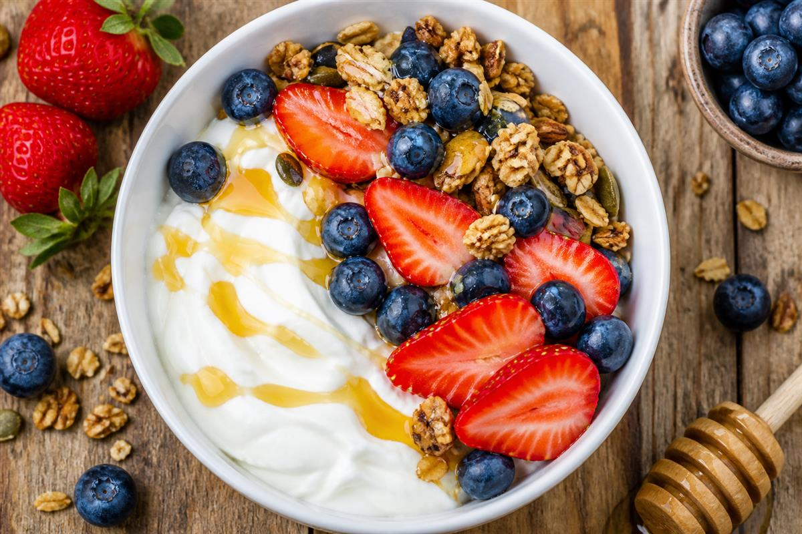

Yogurt & Honey Breakfast Bowl
Ingredients
- 1 cup Greek yogurt
- Honey
- Strawberries
- Blueberries
- GF granola
Method
- Add yogurt to bowl.
- Top with fruit.
- Add honey and granola.
Huntress Notes
Gluten-free, onion-free. Quick and customizable.
Fox Notes
Add a photo of the finished dish and rate after testing. Suggested photo: bright natural lighting, rustic wooden table, forest-green accents.
